Mom Practical 5
This is the last of Simple Momentum Factor series. It will deal the practical issues.
Contents
Full dataset
I have been using U.S. Equity universe consists of 1300 securities. Does the performance improve when I include more securites?
load('../Big Data/data_equity_list.mat'); load('../Big Data/data_historical_data_jan16.mat'); equity_list = equity_list(1:size(storage0,1),:); equity_list_us_large = equity_list(strcmp(equity_list(:,2),'US'),:); history_us_large = storage0(strcmp(equity_list(:,2),'US'),:); clear storage0; clear equity_list; equity_list_us_large = equity_list_us_large(not(cellfun(@isempty,history_us_large(:,1))),:); history_us_large = history_us_large(not(cellfun(@isempty,history_us_large(:,1))),:); load('data_equity_list_us.mat'); load('data_historical_data_us.mat');
compare the result
out of 1300
index = datasample(1:1300,1000,'Replace',false); px = fun_load_price(history_us, equity_list_us, index); px = fun_clean_data(px); list = equity_list_us(index,:); mom_ts = fun_calculate_mom_alt(px,'12-1m'); score_ts = fun_calculate_score(mom_ts,list,'fullsort'); portfolio_weight_ts = fun_portfolio_weight_sector_neutral(score_ts,'topm',0.1); portfolio_rt_ts = fun_portfolio_return(px, portfolio_weight_ts);
out of 8900, here I need to amend fun_load_price() to improve merge() efficiency for large fints datasets.
index = datasample(1:8900,8900,'Replace',false); px = fun_load_price_large(history_us_large, equity_list_us_large, index); px = fun_clean_data(px); px = px(62:end); list = equity_list_us_large(index,:); mom_ts = fun_calculate_mom_alt(px,'12-1m'); score_ts = fun_calculate_score(mom_ts,list,'fullsort'); portfolio_weight_ts = fun_portfolio_weight_sector_neutral(score_ts,'topm',0.011); portfolio_rt_large_ts = fun_portfolio_return(px, portfolio_weight_ts);
compare the result
plot(cumsum(portfolio_rt_ts)); legend('off'); hold on; plot(cumsum(portfolio_rt_large_ts)); legend('off'); hold off; snapnow;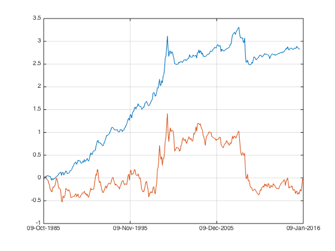
this result is surprising, once we use the larger dataset, the top 100 actually containes no signal at all.
Dive deeper
percentile analysis.
i=1; while i<=10 portfolio_weight_ts = fun_portfolio_weight_sector_neutral(score_ts,'topmn',0.1*i,0.1*(i-1)); portfolio_rt_top_percentile_ts = fun_portfolio_return(px, portfolio_weight_ts); portplot = plot(cumsum(portfolio_rt_top_percentile_ts)); legend('off'); hold on; sharpe_top_percentile(i) = sqrt(12)*sharpe(fts2mat(portfolio_rt_top_percentile_ts(62:end)),0); portplot.Color(4) = 1 - 0.1*i; i=i+1; end hold off; snapnow; plot(sharpe_top_percentile); snapnow;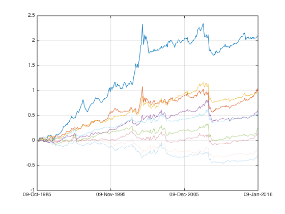 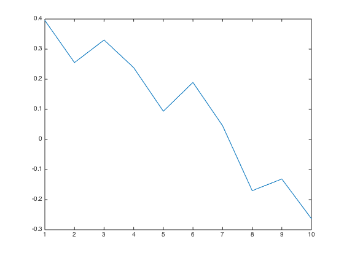
as with smaller dataset, the signal concentrated in the first 40th percentiles. no surprise here.
let's zoom into the first 20th percentile.
i=1; while i<=20 portfolio_weight_ts = fun_portfolio_weight_sector_neutral(score_ts,'topmn',0.01*i,0.01*(i-1)); portfolio_rt_top_percentile_ts = fun_portfolio_return(px, portfolio_weight_ts); portplot = plot(cumsum(portfolio_rt_top_percentile_ts)); legend('off'); hold on; sharpe_top_percentile_zoom(i) = sqrt(12)*sharpe(fts2mat(portfolio_rt_top_percentile_ts(62:end)),0); portplot.Color(4) = 1 - 0.05*i; i=i+1; end hold off; snapnow; plot(sharpe_top_percentile_zoom); snapnow;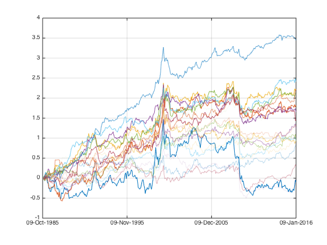 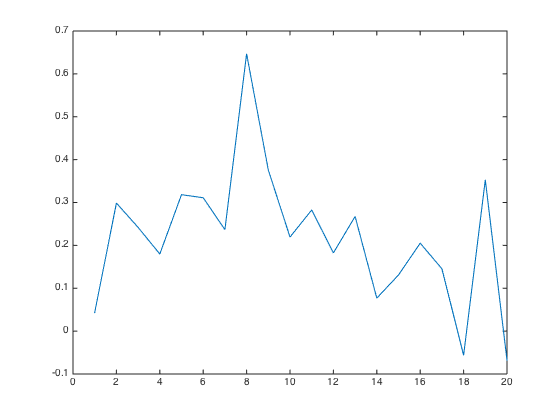
the top hundreds securities has no signal.
let's zomo in further.
i=1; while i<=40 portfolio_weight_ts = fun_portfolio_weight_sector_neutral(score_ts,'topmn',0.0012*i,0.0012*(i-1)); portfolio_rt_top_percentile_ts = fun_portfolio_return(px, portfolio_weight_ts); portplot = plot(cumsum(portfolio_rt_top_percentile_ts)); legend('off'); hold on; sharpe_top_percentile_zoom(i) = sqrt(12)*sharpe(fts2mat(portfolio_rt_top_percentile_ts(62:end)),0); portplot.Color(4) = 1 - 0.025*i; i=i+1; end hold off; snapnow; plot(sharpe_top_percentile_zoom); snapnow;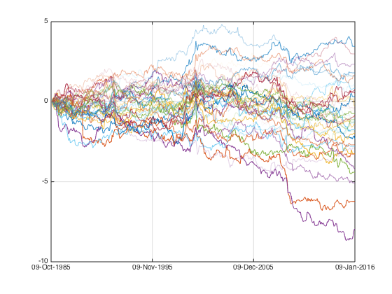 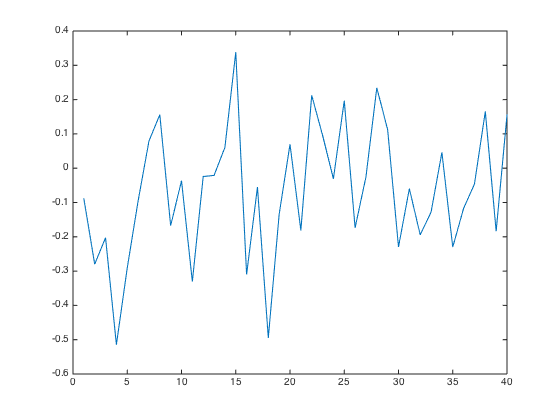
problem is worst for the top 70 securities. only fully recover to normal level at 200. I should at least shave the first 1% off if the database is big.
let's select the top 300~200 securites
portfolio_weight_ts = fun_portfolio_weight_sector_neutral(score_ts,'topmn',0.03,0.02);
portfolio_rt_large_ts = fun_portfolio_return(px, portfolio_weight_ts);
compare the result
plot(cumsum(portfolio_rt_ts)); legend('off'); hold on; plot(cumsum(portfolio_rt_large_ts)); legend('off'); hold off; snapnow;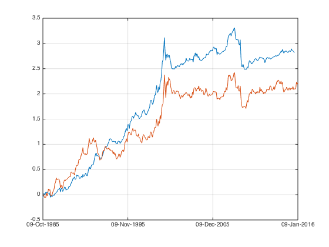
selecting this way we get more volatile performance, even with same number of securities.
mirco cap water down the signal strength
what happens if I select 1000 from 8900 securities instead of out of 1300? My 1000 now would include more microcap companies, let's check this out.
portplot = plot(cumsum(portfolio_rt_ts)); set(portplot,'linewidth',3); legend('off'); hold on; i = 1; while i<=30 index = datasample(1:8900,1000,'Replace',false); px = fun_load_price(history_us_large, equity_list_us_large, index); px = fun_clean_data(px); px = px(62:end); list = equity_list_us_large(index,:); mom_ts = fun_calculate_mom_alt(px,'12-1m'); score_ts = fun_calculate_score(mom_ts,list,'fullsort'); portfolio_weight_ts = fun_portfolio_weight_sector_neutral(score_ts,'topm',0.1); portfolio_rt_large_ts = fun_portfolio_return(px, portfolio_weight_ts); plot(cumsum(portfolio_rt_large_ts)); legend('off'); sharpe_top_percentile_zoom_3(i) = sqrt(12)*sharpe(fts2mat(portfolio_rt_large_ts),0); i = i+1; end hold off; snapnow; plot(sharpe_top_percentile_zoom_3); snapnow;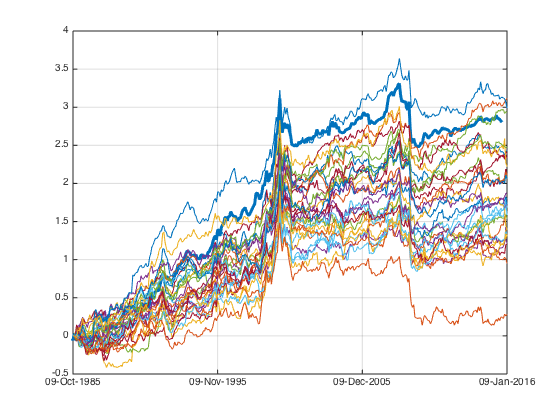 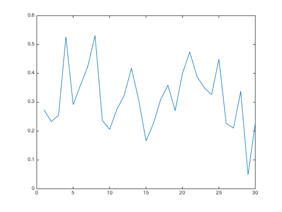
those 30 datasamples rarely exceed the upperbound set by using the the top 1300 securities in terms of market capitalization
let's run it according to market cap again.
portplot = plot(cumsum(portfolio_rt_ts)); set(portplot,'linewidth',3); legend('off'); hold on; i = 1; while i<=17 index = datasample(1+500*(i-1):500*i,500,'Replace',false); px = fun_load_price(history_us_large, equity_list_us_large, index); px = fun_clean_data(px); px = px(62:end); list = equity_list_us_large(index,:); mom_ts = fun_calculate_mom_alt(px,'12-1m'); score_ts = fun_calculate_score(mom_ts,list,'fullsort'); portfolio_weight_ts = fun_portfolio_weight_sector_neutral(score_ts,'topm',0.1); portfolio_rt_large_ts = fun_portfolio_return(px, portfolio_weight_ts); portplot = plot(cumsum(portfolio_rt_large_ts)); legend('off'); sharpe_top_percentile_zoom_4(i) = sqrt(12)*sharpe(fts2mat(portfolio_rt_large_ts),0); portplot.Color(4) = 1 - 0.058*i; i = i+1; end hold off; snapnow; plot(sharpe_top_percentile_zoom_4); snapnow;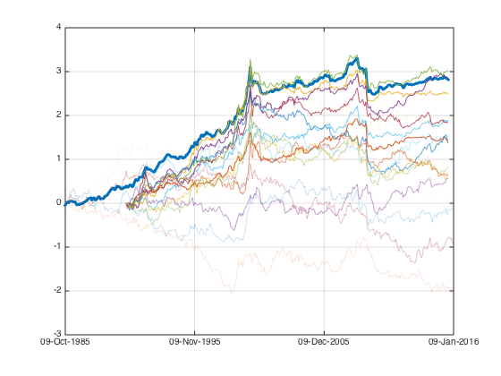 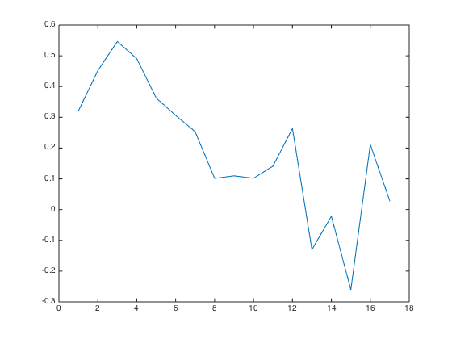
let's take a look at the post momentum crash period
portplot = plot(cumsum(portfolio_rt_ts((end-75):end))); set(portplot,'linewidth',3); legend('off'); hold on; i = 1; while i<=8 index = datasample(1+1000*(i-1):1000*i,1000,'Replace',false); px = fun_load_price(history_us_large, equity_list_us_large, index); px = fun_clean_data(px); px = px((end-80):end); list = equity_list_us_large(index,:); mom_ts = fun_calculate_mom_alt(px,'12-1m'); score_ts = fun_calculate_score(mom_ts,list,'fullsort'); portfolio_weight_ts = fun_portfolio_weight_sector_neutral(score_ts,'topm',0.1); portfolio_rt_large_ts = fun_portfolio_return(px, portfolio_weight_ts); portplot = plot(cumsum(portfolio_rt_large_ts)); legend('off'); sharpe_top_percentile_zoom_5(i) = sqrt(12)*sharpe(fts2mat(portfolio_rt_large_ts),0); portplot.Color(4) = 1 - 0.12*i; i = i+1; end hold off; snapnow; plot(sharpe_top_percentile_zoom_5); snapnow;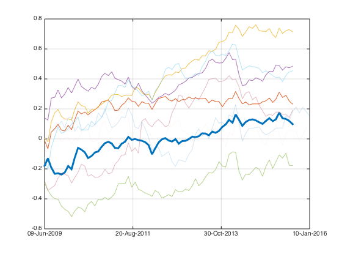 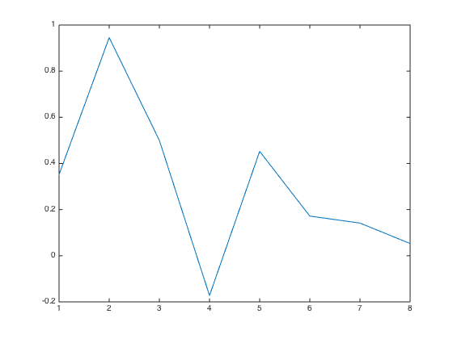
the signal presents in the largest 3000 securites. if you think by casting a larger net you can catch more fish, YOU ARE KIDDING YOURSELF.